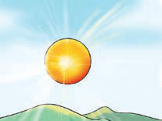
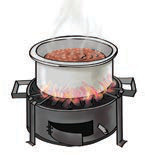
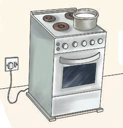
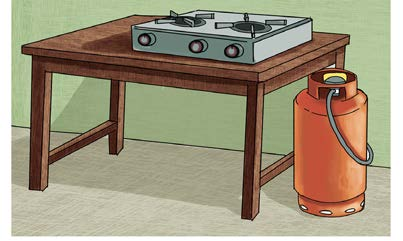

as lightning and stars including the sun. It can also come from non-natural sources like firewood, charcoal, coal, electricity, oil, friction and gas. These sources are used to produce heat for various daily applications. Examine Figure 1, then read the explanations that follow.





Figure 1: Sources of heat energy
Figure 1(a) shows/describes the sun, which is the primary natural source of heat energy. Figure 1(b) and 1(c) show/describe cooking activities using firewood and charcoal as sources of heat. Figure 1(d) and 1(e) show/describe cooking activities using electricity and gas respectively.
Activity 1
Identifying a source of heat
Materials: One dry stick and a piece of dry wood
Procedure
- Rub your palms together.
- Write down what you feel while rubbing your palms.
- 3.Take a thin dry stick.
- 4.Rub the stick on a piece of dry wood.
- 5.Touch the part of the rubbed stick and write down your observation.